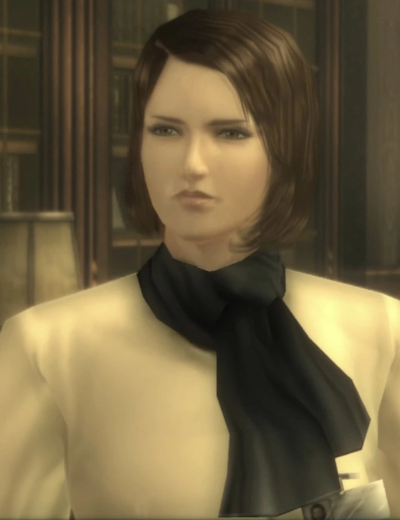
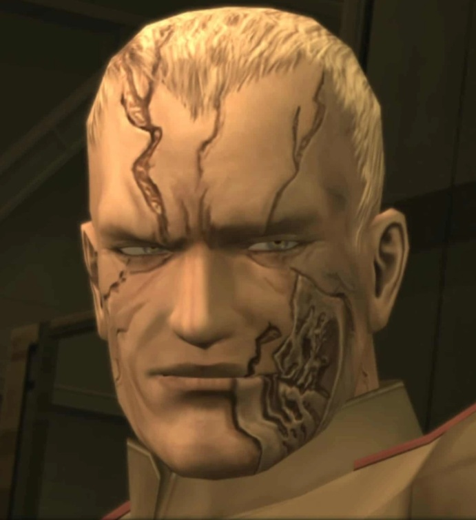
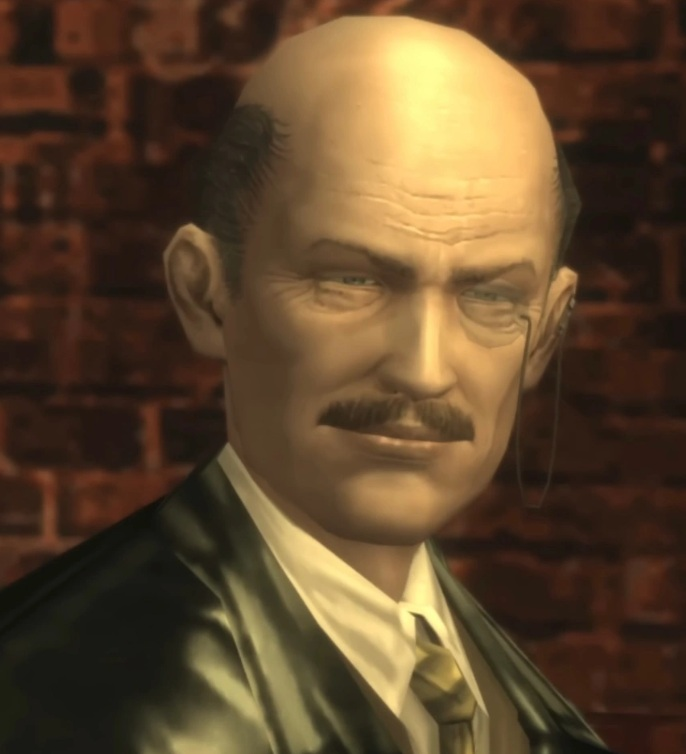
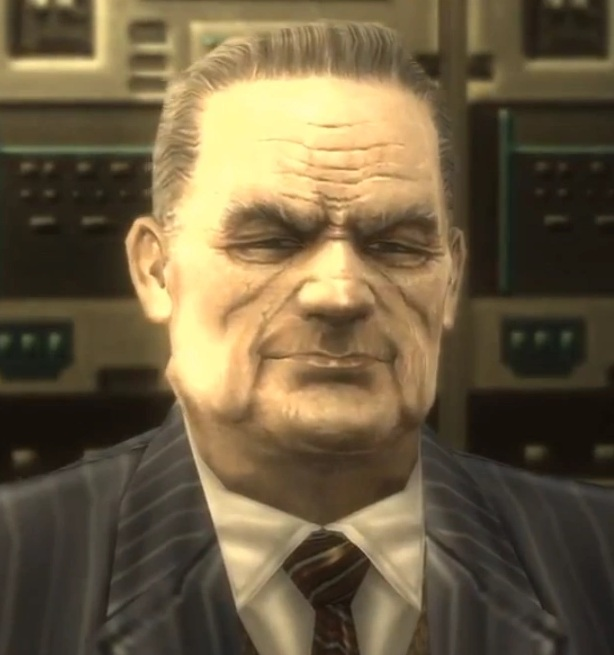
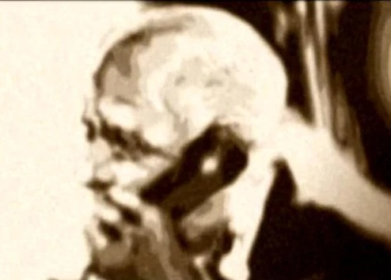
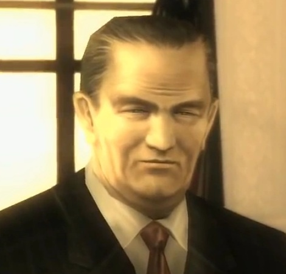
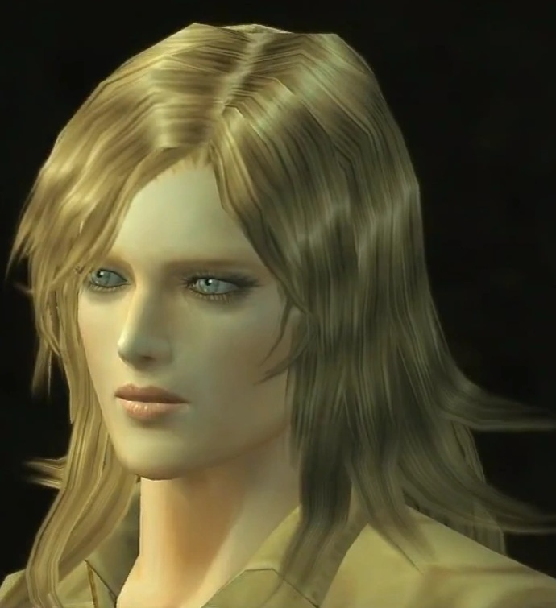
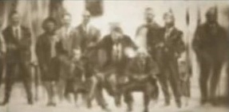

Personagens Principais e Organizações
O protagonista de Snake Eater, Naked Snake, é um ex-agente da CIA e das Forças Especiais dos Estados Unidos (Boinas Verdes). Durante a missão, Major Zero, um ex-membro do Serviço Aéreo Especial, ajuda Snake ao dar conselhos para a missão e táticas de batalha.
Os dois principais antagonistas do jogo são o Coronel Volgin, um coronel da GRU que possui um dispositivo controlador de eletricidade e membro da facção extrema de Brezhnev, que tenta tirar Nikita Khrushchev do poder para empossar Leonid Brezhnev e Alexey Kosygin; e The Boss, ex-mentora de Naked Snake. Além disso, a Unidade Cobra, uma unidade de Forças Especiais liderada por The Boss, possui membros que atuam como os chefes no jogo. A unidade é composta por The End, um experiente atirador de elite conhecido como o "pai do sniping moderno"; The Fear, que possui flexibilidade e agilidade sobrenaturais; The Fury, um desfigurado ex-astronauta armado com um lança-chamas e um jetpack; The Pain, que pode controlar vespas para defender-se e atacar; e The Sorrow, o espírito de um falecido médium.
Outros personagens incluem Sokolov, um cientista de foguetes a quem Snake deve resgatar; EVA, desertora estado-unidense e aparente agente da KGB enviada para auxiliar Snake; e um jovem Ocelot, comandante da unidade "Ocelot", dentre a facção da GRU de Volgin.
Unidade Fox
Fox logo

Naked Snake

Major Zero

Para-Medic

Mr. Sigint

Unidade Cobra
Membros Cobra

The Boss

The Sorrow

The Pain

The Fear

The End

The Fury

GRU
GRU logo

Colonel Volgin

Major Raikov

Spetsnaz
Spetsnaz logo

Major Ocelot

Unidade Ocelot

Outros
Nikolai Stepanovich Sokolov

Aleksandr Leonovitch Granin

Nikita Khrushchev

Lyndon B. Johnson

EVA

The Philosophers

--> Clique aqui para ver mais informações sobre cada personagem/organização <--
Virtuous Mission
Metal Gear Solid 3 se passa durante a Guerra Fria em 1964, onde um agente da CIA, de codinome "Naked Snake", é enviado às florestas da União Soviética. Auxiliado pelo rádio por Major Zero, Para-Medic e sua ex-mentor The Boss, sua missão é resgatar um cientista soviético traidor chamado Sokolov, que está secretamente desenvolvendo um tanque equipado nuclearmente, chamado "Shagohod". A missão prossegue normalmente até que The Boss trai os Estados Unidos e entrega duas miniaturas de mísseis nucleares Davy Crockett a seu novo benfeitor, Coronel Volgin. Sokolov é capturado de volta pela Unidade Cobra e Snake é gravemente ferido em combate corporal contra The Boss, na qual ela domina muito melhor as técnicas de CQC (close quarters combat), que ela mesmo tinha ensinado a Snake. Tal cena se passa numa ponte estreita, onde Snake é jogado e cai no rio, dessa forma, permitindo a Volgin e seu grupo de soldados escaparem com o cientista. Volgin usa um dos mísseis nucleares para encobrir o seu roubo, destruindo o laboratório de Sokolov; ato cuja culpa subsequentemente recai sobre The Boss.
Operation Snake Eater
Após os radares soviéticos captarem o sinal da aeronave usada para levar Snake aos territórios soviéticos, a União Soviética declara os Estados Unidos como o responsável pelo ataque atômico, levando ambas as nações à beira de uma guerra nuclear. Durante uma ligação entre o presidente dos Estados Unidos Lyndon Johnson e o primeiro-ministro da União Soviética Nikita Khrushchev, é feito um acordo em que é dado uma chance aos Estados Unidos de provar a sua inocência e, assim, evitar o confronto. Os Estados Unidos concordam em impedir Volgin, destruir o Shagohod que foi roubado e eliminar a traidora americana, The Boss.
Uma semana após ser resgatado da região, Snake é novamente enviado às florestas tropicais soviéticas como parte da "Operation Snake Eater" ("Operação Snake Eater"),para cumprir as promessas dos Estados Unidos. Durante a missão, ele adquire a assistência de uma outra desertora americana, a ex-agente da NSA, de codinome EVA, que saiu de tal agência alguns anos atrás.[nota 10] Após numerosos encontros com a unidade de elite "Ocelot" (liderada pelo jovem Ocelot) e derrotando quase todos os membros da Unidade Cobra, Snake consegue localizar Sokolov e o Shagohod, quando então é capturado por Volgin. Após testemunhar a aparente morte de Sokolov, Snake é torturado e tem seu olho direito ferido quando tenta proteger EVA de um tiro de Ocelot. Mais tarde, Snake esforçadamente consegue escapar de sua cela, a qual foi levado após a tortura. Esta ação faz parte da jogabilidade da história do jogo, na qual o jogador deve usar estratégias para fazer o guarda da prisão abrir a cela, dessa forma podendo assim o Snake escapar. No meio de sua fuga, Snake quase morre, mas acaba se recompondo e se encontrando com EVA, que lhe devolve o equipamento antes tomado por Volgin.
Quando ele retorna à instalação para destruir o Shagohod, Snake toma conhecimento dos Philosophers. Composta dos mais poderosos homens dos Estados Unidos, União Soviética e China, eles são uma organização de aspecto de Illuminati que, secretamente, controlam o mundo; contudo, após o fim da Segunda Guerra Mundial, eles começaram a lutar entre si mesmos, e a organização foi dissipada. O "The Philosophers Legacy", um recurso financeiro que a organização acumulou para financiar as suas guerras (100 bilhões de dólares, equivalente a cerca de 1 trilhão de dólares atualmente quando ajustado à inflação) foi dividido e escondido em vários bancos espalhados pelo mundo. Volgin ilegalmente herdou tal dinheiro e Snake toma conhecimento de que os EUA estavam tentando recuperá-lo.
Snake continua a sua missão, destruindo a instalação e o tanque Shagohod, enquanto que lutava contra Volgin, que é morto por um raio durante a batalha. Snake e EVA seguem na moto dela a um lago, onde um ecranoplano estava escondido. Antes de eles conseguirem usá-lo para escapar do local, Snake enfrenta a sua antiga mentora, The Boss, quem ele deveria matar para completar a sua missão. Durante a batalha, uma cena é mostrada, revelando que The Boss deu à luz uma criança (o pai sendo The Sorrow) durante uma batalha; contudo, antes da mesma, através de uma chamada no rádio, EVA diz a Snake que a razão de Ocelot ter alcançado o título de major tão jovem era devido ao fato de que seus pais eram soldados lendários. Ela também fala a Snake que a mãe de Ocelot teve que cortar Ocelot para fora durante o nascimento, deixando uma cicatriz que possuía a semelhança de uma cobra. A cicatriz é mostrada em The Boss, o que altamente sugere que ela é a mãe de Ocelot. Após uma batalha emocional, Snake supera seus sentimentos por ela e a derrota. Ele e EVA escapam para o Alaska e passam uma noite juntos. Durante a madrugada, EVA desaparece, deixando uma fita que revelava os seus verdadeiros objetivos como uma espiã para a China, e que foi enviada para roubar o "Philosophers Legacy" para tal nação. A fita continua a ser tocada e EVA revela que The Boss não tinha desertado para a União Soviética; pelo contrário, ela estava sob ordens de fingir ter feito tal traição para que pudesse infiltrar-se na facção de Volgin e localizar o Legacy, que deveria ser levado de volta à América. A parte final de sua missão era sacrificar a sua honra e falecer nas mãos de Snake, sob o disfarce de traidora, para provar a inocência dos Estados Unidos no ataque nuclear de Volgin do começo do jogo.
Após o término da missão, Snake é premiado com o título de "Big Boss" e recebe a Distinguished Service Cross por seus esforços, diante de uma multidão entusiasmada; contudo, Snake ficou tão perturbado e desmoralizado após a revelação de EVA que ele deixa o local após quase que imediatamente receber a sua medalha, mal falando com o presidente, o major Zero e a sua equipe de suporte. Mais tarde, ele aparece chegando a uma sepultura anônima, pertencente à The Boss, que é só uma das milhares localizadas no Cemitério Nacional de Arlington. Colocando a arma de The Boss e um buquê de lírios sobre o túmulo sem nome, Snake procura por algo nas numerosas filas de sepulturas à sua frente, faz uma saudação e derrama uma única lágrima.
Depois dos créditos, é ouvida uma conversa ao telefone com Ocelot, revelando que o microfilme contendo informações sobre a Philosopher's Legacy dada a EVA era uma cópia falsa, que Ocelot em si era ADAM, que metade do Legacy verdadeiro estava nas mãos do governo estadunidense graças a Snake e que ele estava trabalhando para a CIA.
E agora para encerrar depois desse resumo da história de Metal Gear Solid 3: Snake Eater, separamos aqui alguns trailers para você assistir: